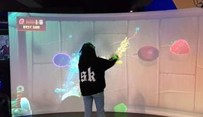
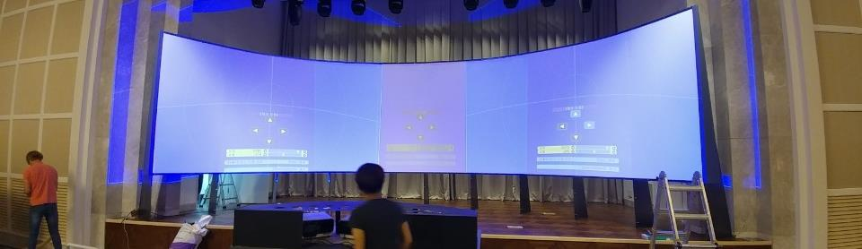

DELIVERED · 2022
홍대 VR 경험 공간
VR 경험 공간에 곡면 스크린 비주얼을 구현했습니다.
WORK / EVIDENCE OF CAPABILITY
인식 시스템과 디지털 환경에서 물리적 미디어와 시뮬레이션까지, 확인된 수행 범위와 상태를 구분해 보여줍니다.
01 / CURRENT DEVELOPMENT
리본소프트는 현재 SCO 노아의 방주 프로젝트에 참여하고 있습니다. 축적해 온 디지털 기술과 인터랙션, 환경·경험 역량을 더 큰 국제 프로젝트 단위로 확장하고 있습니다.

02 / MAJOR DELIVERED EXPERIENCE
곡면 스크린 디스플레이 구현과 레이싱 시뮬레이션 콘텐츠 제작. 전체 테마파크가 아닌 확인된 수행 범위만 표시합니다.



VR 경험 공간에 곡면 스크린 비주얼을 구현했습니다.

곡면 스크린 디스플레이 구현과 프레젠테이션 환경 적용.
아주대학교 산학협력단 개발계약과 아주대학교의료원 MOU 관계를 구분하는 AI 동작인식 기반 환자 운동능력 측정 서비스.

리본소프트 개발 얼굴인식 출입보안 솔루션의 기업 환경 적용 이력. 그룹 전체 구축으로 확대하지 않습니다.

04 / SYSTEMS + ENVIRONMENTS
Reborn Face 3D · Reborn Face 2D · Reborn Vision · Reborn Motion · Reborn Tracking · AI HYPER VISION
WeWorld · Meta Campus · 7 Cubic RELEASED · 2022 · Avatar / Digital Twin
Vflex · Busan Port MOU · GOM & Company · M-Star Korea · Soonsoo Education · Hannune Doctor · Cityfield CONTRACTED · 2022